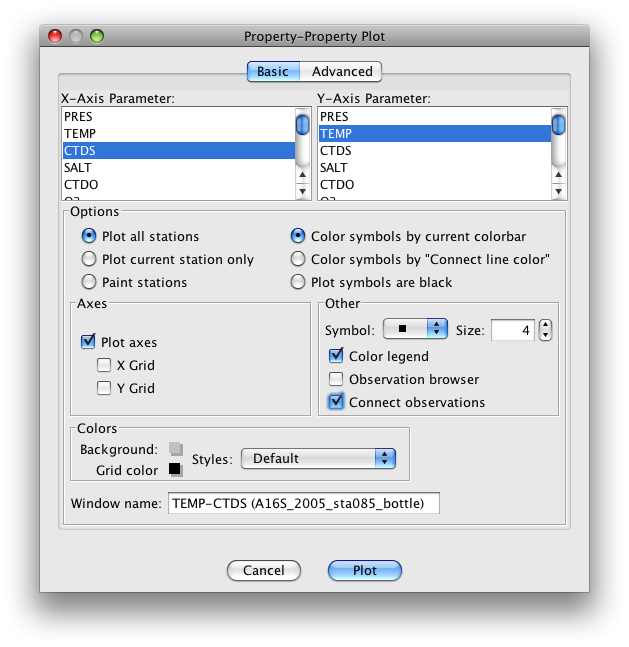
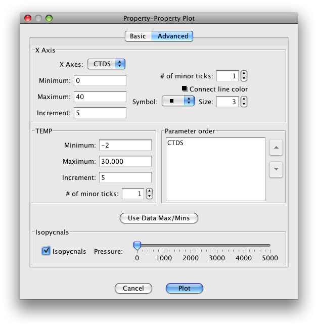
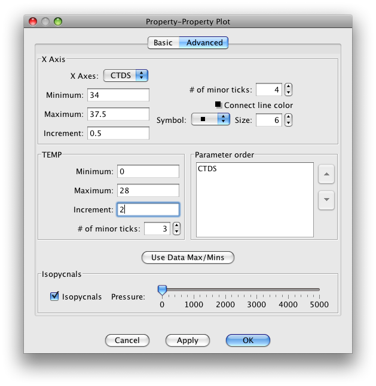
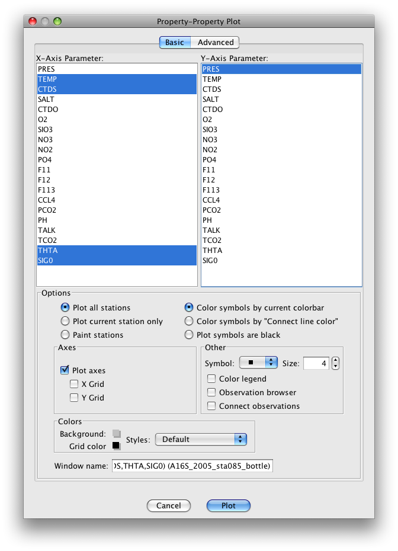
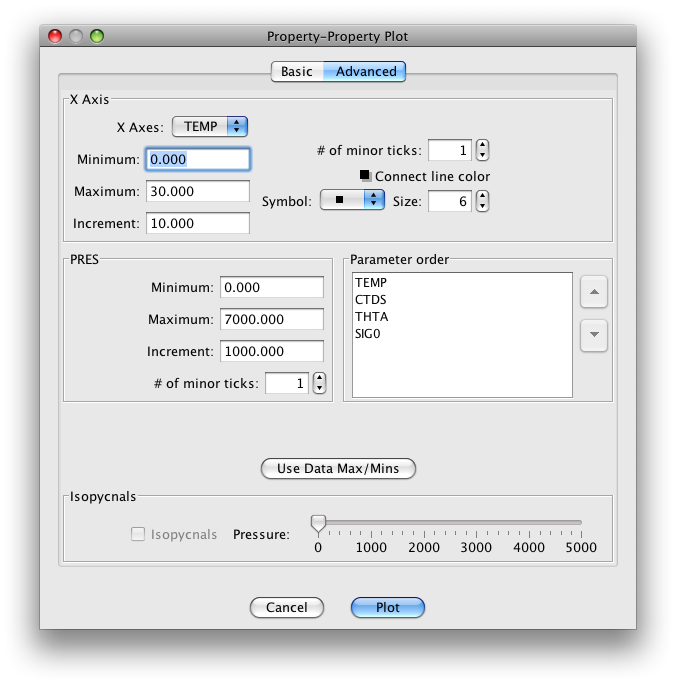

We will begin making a plot for A16S_2005_sta085_bottle.joa data similar to that shown in Figure 3.1 in the DPO text.
Plots→ Property-Property…
This will bring up Basic page of the Property-Property Plot dialog box
Select (click on)
CTDS for the “X-axis parameter”
TEMP for the “Y-axis parameter”
Select (check the boxes)
Color legend
Connect observations
The dialog box should look like this:

FIG 3b-01 The Basic panel of the Property-Property Plot dialog box¶
To change the plot ranges and add density values (expressed in sigma-units), set up the Advanced panel of the Property-Property Plot dialog box to look like this:

FIG 3b-02 The Advanced panel of the Property-Property Plot dialog box¶
When you click OK, JOA will draw a plot similar to that in Figure 3b-03:
The color legend (JOA Color Bar) on the right-hand side is the current color bar used in the Data window.
(The default for an unmodified copy of JOA is usually a color bar based upon pressure; you can also customize your own default color bar.)
Examine
If you look carefully at the colors of the data points in the TEMP-CTDS plot, and if a pressure (PRES) color bar is in the Data window (and in the Property-Property Plot), you will see that most of the vertical extent of the water column at this station is in the narrow ranges of temperature and salinity.
You can take a closer look at any portion of your JOA Property-Property Plot by selecting the desired portion with your cursor, i.e. by:
Placing the cursor at one corner of the desired plot subset and click-dragging the cursor, until all desired points are within the selection
Note
To modify the plot to show an exact range of properties, it is sometimes easiest to re-open the Property-Property Plot dialog box and enter the desired range for each parameter. Instructions are given below:
Or
To edit a plot:
Double-click or control-click on the Property-Property Plot
Or type [ctrl/cmd]-R or Edit → Edit: plotname when the Property-Property Plot is the front-most window.
If you do that, and set up the Property-Property Plot dialog box Advanced window to look like this:

FIG 3b-04 The Advanced panel of the Property-Property Plot dialog box¶
When you click on OK, your Property-Property Plot will look like this: (The color bar may appear differently depending on the color bar default)
That is the JOA “browsing dot”, which shows the present location of the JOA data browser.
Look in the JOA Data Window. The station header and data values displayed are the point of the browsing dot. The graphic data display of the layout shows a dot at this location. The small sliding arrow next to the current JOA color bar shows the closest color of the colored parameter. And the browsing dot will also show up on every JOA plot, thereby linking all plots and the data window.
Use the up and down arrows on your keyboard to navigate the browsing dot to shallower or deeper data, respectively, at the currently-selected station shown in the JOA Data window.
You can use the left or right arrows to change the selected station - if more than one is open - to the previous or next station, respectively, in the currently-open data file shown in the JOA Data Window. (In this exercise there is only one station in the data file used.)
This way you can use the arrow keys to navigate through a data set.
Examine: Ocean Layers
You can see in the A16S_2005 station 085 bottle data, that:
The ocean at this location (in the central South Atlantic Ocean) is layered from top to bottom (from lower to higher pressure - note the color bar) with temperature warmest in the upper layer and coldest in the deepest layer.
The salinity decreases downward (to higher pressure) to a point, then increases to a mid-deep maximum, then decreases again to the deepest layer.
Note
Notice the relative effects on density caused by changes in temperature and salinity, especially at different temperatures. The curved lines on this temperature versus salinity Property-Property Plot are isopycnals.
Isopycnals
Lines of constant density at the sea surface or 0 decibars.
An isopycnal is a surface of constant density of water. Density of seawater is a non-linear function of pressure, temperature, and salinity. Density increases as pressure and salinity increase, and decreases as temperature increases. In the ocean, denser water always lies below less dense water.
It is common in oceanography to examine density at one pressure, in which case it is referred to as potential density. The most common reference pressure for potential density is sea surface pressure, If no reference pressure is listed for a potential density value, one may assume that sea surface pressure is being used as the reference pressure.
But note that any constant pressure value can be used, in which case the potential density parameter must be labeled to include the reference pressure
A line on constant potential density can be drawn on an X-Y temperature vs. salinity plot, Such a line is commonly referred to as an isopycnal line.
You can see that, for colder water, it takes a greater change in temperature to produce the same change in density than for warmer waters. You could say similarly about salinity that, in colder waters, a given salinity change produces a larger density change than it does in warmer waters.
For this reason, density variations in the warm waters of the oceans are sometimes thought of as being “driven by temperature”; whereas, those in the cold waters of the oceans are “driven by salinity”.
Because the focus here is on density, note that on the A16S_2005 station 085 bottle data plot you drew, the density-related parameter “sigma” (see the caption to DPO Figure 3.01) increases to higher numbers (to higher potential densities) from the upper layer to at least the level of the mid-deep salinity maximum.
Below that (at higher pressures than that) it is not clear from the small plot on your monitor that this particular density-related parameter actually does increase as one moves into the deepest, near-bottom layer.
Common sense should tell you that density must increase, or at least be uniform, as one moves from a shallower layer to a deeper layer; otherwise the water would mechanically overturn.
There is a physically sensible resolution to this hint of apparent instability in the deeper waters at station 085 (a false hint, by the way); we will explain this in a later example.
One can use the JOA Property-Property plotting capability to make plots of temperature or salinity versus pressure similar to those in the three panels of DPO Figure 3.2.
We will do something different and use JOA’s multiple-X-axis-parameter plotting capabilities to provide profiles of multiple ocean property parameters versus pressure on a single JOA plot. (Up to 7 X-axis parameters are permitted on one JOA Property-Property Plot.)
Exercise 3B-03: Seawater Properties - Potential Temperature and Sigma-0¶
Before you set up the JOA 4-parameter plot, you need to use JOA’s built-in parameter calculator to calculate values of potential temperature (see the DPO text) and sigma-0 (the density parameter) for these data:
Calculations → Parameters…
In the resulting Parameter Calculations dialog box select (click on the check boxes) the “Theta” (oceanographers’ abbreviation for “Potential Temperature”) and “Sigma-0” choices:
To make the dialog box shown below, first have the A16S_2005 station 085 bottle data file open in JOA
Plots → Property-Property…
Now use the dialog box resizing symbol on the lower right of the dialog box to “pull down” (extend down) the dialog box (click on the symbol and move the mouse pointer down the screen). You will see the scrolling X- and Y-axis parameter lists expand until all the parameters are visible.
Now, via right-clicks or ctrl/command-clicks, you will find you can select more than one X-axis parameter. Do this for temperature (“TEMP”), CTD salinity (“CTDS”), potential temperature (“THTA”) and sigma-0 (“SIG0”), with pressure (“PRES”) for the Y-axis.
Also select Color symbols by “Connect line color” and Connect observations
Select square dot symbols, size 6 (making your symbols easier to see on the resulting plot).
The Basic page of the Property-Property Plot dialog box should then look like this:

FIG 3b-07 The Basic panel of the Property-Property Plot dialog box¶
You could just click on Plot at the bottom of the dialog box. But one of the reasons we are going through this plot set-up so thoroughly is so that you can learn how to use JOA’s plot customization features. So, instead of clicking on Plot,
Click on Advanced near the top of the dialog box to see the advanced page of the JOA Property-Property Plot dialog box. You will see something like this to start with:

FIG 3b-08 The Advanced panel of the Property-Property Plot dialog box¶
What you can now do is customize the “Minimum” and “Maximum” values, “Increment” and “# of Minor Ticks” (and, if you wish, the “Connect line color”, “Symbol” and symbol “Size”) for each of the X-axis parameters (reached individually by scrolling through the list of X-axis parameters) and the “Minimum” and “Maximum” values, “Increment”, and “# of Minor Ticks” for the Y-axis parameter, which in this case is pressure (“PRES”). Set these up as shown in the table:
Axis
Minimum
Maximum
Increment
# of Minor Ticks
TEMP
0
28
2
1
CTDS
34
37.5
0.5
4
THTA
0
28
2
1
SIG0
24
28
0.5
4
PRES
0
6500
500
4
Now when you click on Plot, you will see an interesting plot:
With this plot you can now visualize the co-variation of temperature, salinity, and a density-related parameter with pressure at this location in the South Atlantic Ocean in 2005. You can also see - via the pair of temperature versus pressure profiles - the effects pressure on measured temperature (“in situ temperature”).
Compare the measured temperature with the calculated parameter potential temperature, in the deep and bottom waters potential temperature is always colder than in situ temperature.
You will also note that the range of each parameter in this 4-parameter Property-Property Plot is significantly larger in the upper layer than it is in the deeper layers below.
To explore the deep variability more closely, you need to expand the X-axis scales to emphasize the ranges for the deep water.
To do this, bring up the Property-Property Plot dialog box.
Bring up the Property-Property Plot dialog box:
Double-click or control-click on the Property-Property Plot
Or type [ctrl/cmd]-R or Edit → Edit: plotname when the Property-Property Plot is the front-most window
Type in these ranges in the appropriate places in the Advanced page of the dialog box:
Axis
Minimum
Maximum
Increment
# of Minor Ticks
TEMP
0
4
0.5
4
CTDS
34.5
35.0
0.05
4
THTA
0
4
0.5
4
SIG0
24
28
0.5
4
PRES
1000
6500
500
4
When you then click Plot, your 4-parameter Property-Property Plot will look like this:
When pressure effects on temperature are removed (remember, this takes place via the calculation of potential temperature “theta”), the temperature of the deepest sample is not warmer than that of the sample immediately above.
Use the JOA Parameters calculator (under the JOA Calculations menu) to calculate other physical parameters described in DPO Chapter 3:
Heat content
Specific volume anomaly
Use JOA Property-Property Plots to graph and explore their variations, as done above.